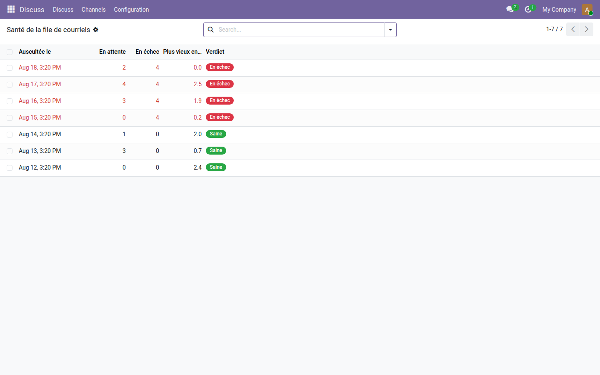
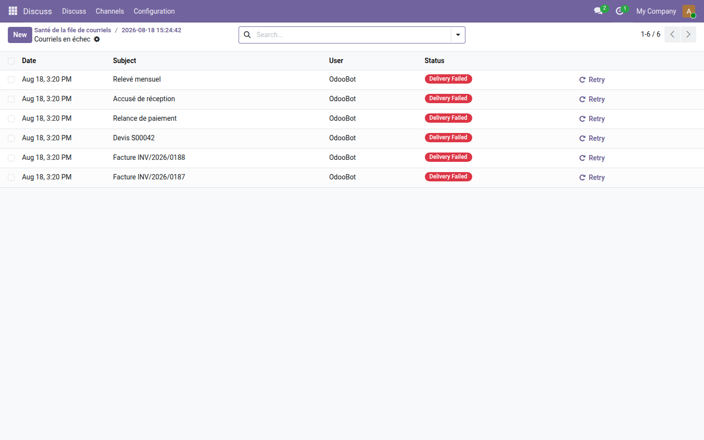

Moniteur de la file de courriels
Sachez que vos courriels ne partent plus le jour même, pas trois mois après.
Un serveur sortant mal configuré ne fait aucun bruit. Les courriels s'empilent en mail.mail, la file grossit, et personne ne l'apprend avant qu'un client demande pourquoi il n'a jamais reçu sa facture. Odoo sait renvoyer un courriel en échec ; il ne surveille rien.
Ce que ça apporte
- 🩺 Une auscultation quotidienne — combien en attente, combien en échec, depuis combien de temps le plus vieux attend, et pour quelles causes.
- 🚨 Une alerte qui ne passe pas par un courriel — prévenir d'une file morte en envoyant un courriel reviendrait à confier le diagnostic au malade. L'alerte est une activité, lisible dans l'interface quel que soit l'état du serveur sortant.
- 🔕 Une seule alerte ouverte à la fois — une panne qui dure des semaines ne produit pas une activité par jour, sinon plus personne ne les lit.
- ↩️ Renvoi groupé — un bouton remet en file tout ce qui est en échec, une fois le serveur réparé.
Aperçus réels
1. L'état de la file, jour après jour
Trois journées saines, puis quatre relevés en échec : la date exacte où le serveur sortant a lâché se lit d'un coup d'œil.

2. Ce qui est mort, et ce qu'on en fait
Depuis le relevé, un bouton mène aux courriels concernés : factures, devis, relances. Chacun peut être renvoyé une fois la cause corrigée.

Pourquoi l'adopter
- Le seuil de la file à l'arrêt se règle par paramètre système ; le reste fonctionne sans configuration.
- Un test vérifie que l'alerte n'émet elle-même aucun courriel : la promesse est vérifiable, pas déclarative.
- Module gratuit, licence LGPL-3 — aucun abonnement, aucune dépendance extérieure.
Pour aller plus loin
Surveiller la file est une chose ; répondre aux clients en est une autre. La gamme OdooSkills compte une famille Helpdesk complète — tickets, engagements de délai, base de connaissances — et un moniteur des tâches planifiées, son voisin naturel. Catalogue complet : apps.odooskills.com.
Licence LGPL-3 — compatible Odoo 19.0 Community et Enterprise. Support : support@odooskills.com.